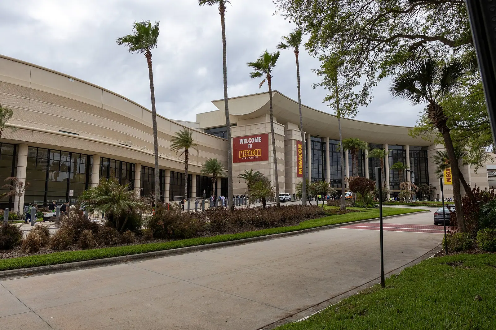

American Social
American Social is Restaurant Row's high-energy sports lounge, lively and clubby with screens in every sightline and a room built for game day.

407 FYI · International Drive Convention Guide
407 FYI · A Convention GuideThe Orange County Convention Center is the anchor of this corridor, and everything around it exists to serve the people it brings to town: headquarters hotels, group dinners, and rooms that can take the whole team at once.
Every pick below carries the guide’s convention tag in the International Drive district, from the convention center skywalks to Restaurant Row on Sand Lake Road. Each one opens its full card in the finder, with its address and details.
The Orange County Convention Center, west concourse. Photo: “Orange County Convention Center West Concourse during MegaCon 2026 - 3-19-2026” by Nielsoncaetanosalmeron, CC BY 4.0, via Wikimedia Commons.
The Short Version
Convention weeks on I-Drive run on two clusters. The first wraps the convention center itself: headquarters hotels tied to the concourses by skywalks and pedestrian bridges, and Pointe Orlando beside them, where group dinners, a ropes course and bowling alley, and a two-story Old Havana courtyard stack into a few walkable blocks.
The second cluster is Restaurant Row, the Sand Lake Road strip at the corridor’s west end, where the client dinner is played at its highest level: white-tablecloth steakhouses and seafood rooms, a robata grill cooking over binchotan, a wine and jazz room, and Norman Van Aken’s flagship, the room where New World cuisine got its name.
The move: keep the team inside one cluster for the night. The corridor rewards groups that walk, and the cross-cluster car move lands at the exact hour every other convention in town is making it too.
The Picks
The complete convention list for the district, in the guide’s own order. Tap any name to open its own page.
American Social is Restaurant Row's high-energy sports lounge, lively and clubby with screens in every sightline and a room built for game day.
Three blue performers, no words, and a room full of paint drums, PVC pipe instruments, and giant balloons bouncing over the crowd.
A candlelit, old-school dining room in Dr. Phillips where a live pianist plays and the staff treats anniversaries like sacred occasions.
Mango's runs as a nightclub first on International Drive, with dinner and a live Latin show folded into the front of the night.
Mosonori is Chef Henry Moso's handroll bar on Sand Lake Road, a calm, minimalist counter where temaki are made one at a time and handed straight to you so the nori stays crisp.
Family-run since 2006, Nile Ethiopian is a warm, homey room on International Drive where meals arrive shared, mounded on spongy injera you tear and scoop.
Nomikai by Sushi Saint brings Chef Michael Collantes's celebratory style to ICON Park, energetic and refined, with sushi guests call fresh and immaculate.
A low-light lounge inside Live! at Pointe Orlando, built around Dr. Dre and Snoop Dogg's Still G.I.N.
Taverna Opa is a festive, high-energy Greek taverna at Pointe Orlando where dinner turns into a celebration, napkins flying as confetti.
Taffer's Tavern brings Jon Taffer's old-world tavern warmth to Pointe Orlando, cozy and lively with a sports-bar hum.
The parrilla decides everything at this Argentine steakhouse just off International Drive.
A sports bar built like a stadium on International Drive, with an oversized stadium screen and wall-to-wall screens wrapping the room, so every seat faces the action.
Rocco's is Sand Lake Road's lakeside patio party, upbeat and colorful, where the tableside guacamole steals the show before the tacos even land.
The I-Drive Shake Shack sits in ICON Park under the Orlando Eye, a busy fast-casual patio stop with rustic chic polish.
Kobe turns dinner into theater on International Drive, where teppanyaki chefs work communal grill tables with onion volcanoes, flying shrimp, and tricks guests say they had not seen before.
Yard House is ICON Park's big-room guarantee: a wall of taps, a glass-enclosed keg room as the centerpiece, and classic rock under everything.
Kavas Tacos & Tequila is Pointe Orlando's loud, colorful taco party, vibrant and celebratory from the first chips and salsa.
Oza Izakaya is a sleek, garden-like Japanese room on Central Florida Parkway, beautiful and unhurried in a way that suits a date night.
YH Seafood Clubhouse is Turkey Lake Road's elegant Cantonese room, refined and warm, where round tables fill with family-style plates.
A polished Brazilian rodizio on Carrier Drive, minutes from the Convention Center, where gauchos carve picanha, ribeye and lamb right at the table.
An I-Drive original since the 1990s that treats dinner like an art opening, with resident artists painting at easels and the walls doubling as the gallery.
Blake Shelton's honky-tonk in the middle of ICON Park, with live country on stage and scratch-made Southern cooking coming out of the kitchen.
The polished room inside ICON Park, a Mediterranean supper club working coastal Italian and Greek plates: crudos, whole fish, a Moroccan lamb shank and a prosciutto and fig pizza, with a lemon drop martini in hand.
The default client steakhouse at Pointe Orlando, a short walk from the Rosen hotels, running the full expense-account ritual.
Family-style Italian at Pointe Orlando, built for the table that cannot agree on one dish.
A coastal escape staged inside Pointe Orlando: whitewashed wood, rose on the tables, and beach-house plates like seafood towers, a lobster roll and blackened sea bass.
A two-story Old Havana courtyard rebuilt inside Pointe Orlando, all palm shadows, live Latin music, and rum.
Bowling, laser tag, billiards, a ropes course, and a big arcade under one roof at Pointe Orlando, with lane-side food and a full bar keeping groups fed between games.
The headquarters hotel on International Drive, tied to both convention concourses by pedestrian bridges so the show floor is a walk, not a shuttle ride.
Rosen's flagship tower on International Drive, joined to the convention center's West Building by its own skywalk.
The West Building's other skywalk hotel, crossing to Hall F by the Gary Sain Memorial Bridge with a calmer, more relaxed feel than the flagship.
A convention hotel with a resort hiding inside it, linked to the South Concourse by its own pedestrian bridge.
Norman Van Aken's flagship at Dellagio on Sand Lake, the room where New World cuisine fuses Florida, the Caribbean, and Latin America.
Dellagio's robata grill, where skewers cook over binchotan charcoal and the sushi bar keeps pace with rolls like the Big Boss and the Smoky Dragon.
Inside Dellagio's fountain cluster, Fleming's runs the classic steakhouse playbook with private-dining polish: prime cuts, a deep wine list, and service guests call truly exceptional.
Restaurant Row's long-running wine and jazz room, reborn under a new name at the same Sand Lake address.
A rock and roll gastropub on Sand Lake built around chef-driven burgers and a whiskey-deep bar.
Eddie V's pairs prime seafood and steak with the V Lounge, where live trios keep the night moving after the plates clear.
White-tablecloth polish at the I-4 end of Restaurant Row, in the Rialto: seafood and prime steaks, a raw bar, and a lively, dressy bar scene.
The familiar name on Restaurant Row, recently remodeled and running its sizzling-platter ritual exactly to spec.
Before You Go
Keep Going
This page is one cut of the guide: conventions on International Drive. The district story covers the corridor itself, and the finder carries every place in the guide with search, filters, and a map.